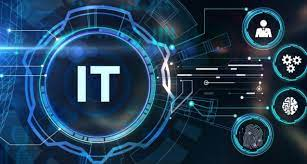

Home Page
The Impact of IT Technology on Modern Life In today's rapidly evolving world, Information Technology (IT) has become the backbone of nearly every industry. From businesses and education to healthcare and entertainment, IT technology shapes how we work, communicate, and live. The ever-growing reliance on IT solutions has sparked significant innovations, enhancing efficiency, collaboration, and connectivity across the globe. Key Technologies Transforming Our World Artificial Intelligence (AI) AI is revolutionizing multiple industries by enabling machines to think, learn, and make decisions. From self-driving cars to advanced analytics, AI is reshaping how we interact with technology and the world around us. Cloud Computing Cloud services offer businesses and individuals on-demand access to storage, processing power, and software without the need for expensive infrastructure. Popular platforms like Amazon Web Services (AWS), Google Cloud, and Microsoft Azure are making it easier than ever to scale operations and store data securely. Cybersecurity As our reliance on digital platforms grows, so does the need for robust cybersecurity. Protecting data from breaches, cyber-attacks, and ransomware is critical for individuals and organizations alike. Innovations in encryption, multi-factor authentication, and AI-powered security are leading the way in safeguarding our digital lives. Blockchain Technology Originally designed for cryptocurrencies like Bitcoin, blockchain has expanded its use cases to sectors such as finance, supply chain, and healthcare. Its decentralized nature ensures secure, transparent, and immutable record-keeping, which is transforming how data is shared and stored. Internet of Things (IoT) IoT connects everyday devices to the internet, creating smarter homes, cities, and industries. From wearable fitness trackers to connected home devices, IoT is enabling a more efficient, connected world. 5G Technology With 5G networks, we’re entering a new era of faster internet speeds and more reliable connections. This technology is paving the way for advancements in smart cities, autonomous vehicles, and remote healthcare, unlocking possibilities we never thought possible. Why IT is Important in Today's World IT is no longer just a tool – it’s an essential part of the modern infrastructure. From cloud storage solutions to real-time collaboration tools, IT enables businesses to remain competitive and individuals to stay connected. The possibilities for growth and innovation are endless as we continue to integrate new technologies into our daily lives. The Future of IT As technology continues to advance, we can expect to see more automation, increased connectivity, and greater integration of digital technologies into every aspect of our lives. Whether it's through breakthroughs in quantum computing, advancements in virtual reality (VR) and augmented reality (AR), or the expansion of smart devices, the future of IT promises to be more exciting than ever before..
